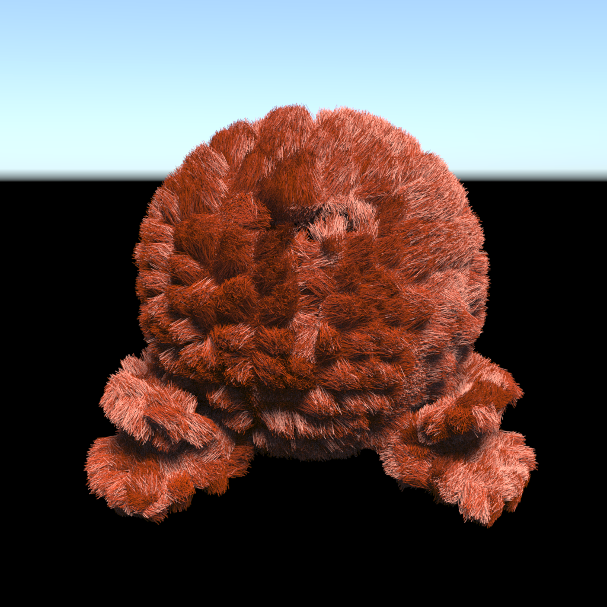

Physically Based Hair Rendering
Visualizing different fur rendering techniques such as Marschner (2003) model and the Yan (2015) model and comparing rendering speed and quality. Team: Ja Wattanawong, Briana Zhang, Richard Liu, Yi Liu
Abstract
In our project, we worked on physically-based rendering of hair by implementing the Kajiya-Kay and Marschner models of hair as BSDFs in the Mitsuba renderer. To a lesser extent we also experimented with a thin dielectric model. Kajiya-Kay’s model assumes that light diffracts in a cone around the hair fiber, which causes the primary specular component to fall off more gently in the direction of reflection. With the thin dielectric model, the effects of multiple reflections inside the hair fiber create a secondary halo effect which renders hair more realistically. Finally, we implemented the Marschner model which considers three scattering modes: reflect (R), transmit-transmit (TT), and transmit-reflect-transmit (TRT). The Marschner model also considers other elements of the hair geometry such as angled scales which shift the specular highlights, and absorption within the fiber. We implemented these three models with decent rendering results and compared the differences between them.
Kajiya-Kay Model
The basic idea of the Kajiya-Kay model is that light will reflect in a cone shape given by the mirrored vector rotated around the hair tangent which runs along the fiber from root to tip.
Kajiya-Kay’s model modifies the Phong specular term to only depend on the angle to the hair fiber and uses the following equation:
$$\begin{align} \Psi_{specular} &= k_s cos^p(\theta) - \theta ‘ \\ &= k_s (cos \theta cos \theta ‘ + sin \theta sin \theta ‘)^p \\ &= k_s(t \cdot l \ t \cdot e + sin(t, l) sin(t, e))^p\end{align}$$
The variables in this equation are illustrated in the diagram above. Most importantly, $t$ is the hair tangent, $e$ is the vector that points to the camera, $l$ is the vector that points to the light source, and $\theta$/\$\theta’$ refers to the angles between these vectors and the tangent. $k_s$ is the specular term’s coefficient and $p$ is the Phong exponent that controls the power falloff with increasing angular difference.
We implemented the specular term above, and made some improvements to improve perceived visual quality. Namely, we reduced the $k_s$ coefficient to account for the diffraction around all directions of the cone and ensure there isn’t too much light in the scene. We also pruned backscatter rays (where $w_i \cdot w_o > 0$ in the local shading frame) since the reflection should only go one way.
These are our final results. The Phong model of Mitsuba is included for comparison:

The results obviously look very similar, since they are based on a similar principle. However, with our version of Kajiya-Kay, the end result has a more vivid color, softer highlights overall, while still retaining the diffraction pattern that extends down the hair fibers. The specular term also falls off much more quickly with viewing angle and this is probably due to the new alpha term.
We render the specular term individually in order to see more clearly how the highlights extend as described above:
Here are more renders on other models:

Thin Dielectric Model
The Marschner paper begins with the assumption that hair is a thin dielectric cylinder, and so we tried modeling with that first to see the difference. Using the thin dielectric model, we end up with a secondary halo due to transmitted and reflected terms. The thin dielectric model is similar to the glass model that we implemented in class. With probability $R$, $R$ being the Fresnel term, light reflects. Otherwise, it refracts. Reflectance is the same as what we do in class with the resulting vector being Vector(-wi.x, -wi.y, wi.z), whereas for transmittance, it is simply Vector(-wi.x, -wi.y, -wi.z). Ultimately, the result does not look realistic since it is essentially thin strands of glass. However, you do begin to see the secondary halo caused by the additional transmittance interactions. The rendered result has no color because it does not have the diffuse term.
Phong Model
Kajiya-Kay

Marschner Model
The Marschner model incorporates three primary scattering modes: reflectance (R), transmit-transmit (TT), and transmit-reflect-transmit (TRT). It models the hair as a thin dielectric cylinder, incorporates the fact that hair is covered by scales that angle towards the hair root, and derives custom scattering functions based on the three modes of interaction as shown below:

In addition to these terms, we added a diffuse term based on the microfacet model in order to add color. In terms of sampling, we looked for importance sampling of the Marschner model and found many results, but ultimately decided to stick with cosine hemisphere sampling.
We implemented the Marschner model, focusing on the following function from the paper for the three components:
$$\begin{align} S(\phi_i, \theta_i; \phi_r, \theta_r) &= M_R(\theta_h) N_R(\eta’ (\eta, \theta_d); \phi) / \text{cos}^2(\theta_d) + \\ &M_{TT}(\theta_h) N_{TT}(\eta’ (\eta, \theta_d); \phi) / \text{cos}^2 \theta_d + \\ & M_{TRT}(\theta_h) N_{TRT} (\eta’ (\eta * (\phi_h), \theta_d); \phi) / \text{cos}^2 \theta_d \end{align}$$
This is the scattering function given an input direction and output direction, which are both parametrized by the longitudinal angle $\theta$ along the hair fiber, and the azimuthal angle $\phi$ along the cross section. We see that it is broken up into terms for each of the three scattering modes and by each angle (M/N). We adapted the BSDF’s eval() function to calculate the $\phi$ and $\theta$ necessary to be passed into this function.
$$\begin{align*} M_R(\theta_h) &= g(\beta_R; \theta_h - \alpha_R) \\ M_{TT}(\theta_h) &= g(\beta_{TT}; \theta_h - \alpha_{TT}) \\ M_{TRT}(\theta_h) &= g(\beta_{TRT}; \theta_h - \alpha_{TRT}) \end{align*}$$
The longitudinal scattering function is a gaussian parametrized with a variance of $\beta$, a constant given in the paper, and a mean of $\theta_h - \alpha$ where $\alpha$ is also a constant. $\theta_h$ is the expected angle that the ray would shoot outwardly if the hair were a perfect cylinder. Then, $\alpha$ represents the tilt of the hair scales resulting in the R term shifting towards the root and the TT and TRT terms shifting towards the tip. We end up messing with the coefficients for each model for aesthetic purposes. The final coefficients of alpha that we used were $m_R = 2, , m_{TT} = 1, m_{TRT} = 1$.
The azimuthal function was much more difficult to compute. We ended up using the azimuthal function proposed in the d’Eon paper, which was much more computationally tractable.
$$N_p(\phi) = \frac{1}{2} \int_{-1}^1 A(p, h)D_p(\phi - \Phi(p, h))dh$$
The azimuthal function varies for every ray, where each ray is labeled with $p$. $p$ is just 0, 1, or 2 which is labeled in the diagram of rays. $h$ can be seen in the original marschner diagram, and the $\Phi$, $D$ and $A$ function are calculated as follows.
$$\Phi(p, h) = 2 p \gamma_t - 2 \gamma_i + p\pi$$
Where $\gamma_t = \text{arcsin}(h/\eta)$, $\eta$ being the index of refraction, and $\gamma_i = \text{arcsin}(h)$. These values can be seen in the original Marschner model.
$$D_p(\phi) = \sum_{k=-\infty}^{\infty} g(\beta_p; \phi - 2 \pi k)$$
In the code, we approximate $D_p$ by summing the Gaussians starting from the middle and expanding outwards. We start by summing the Gaussians at $k = 0$ and $k = -1$, then summing $k = 1$ and $k = -2$ and adding that to the sum, and so on until the change in the sum each iteration no longer exceeds a certain threshold.
$$A(p, h) = (1 - f)^2 f^{p - 1} T(\mu_a^{’}, h)^p$$
Where $f$ is the fresnel term and $T(\mu_a, h)$ is the absorption function and $\mu_a$ is the absorption coefficient.
$$f = F(\eta, \text{arccos}(\text{cos}(\theta_d) \text{cos}(\text{arcsin}(h)))$$
$$T(\mu_a, h) = \text{exp}(-2 \mu_a (1 + \text{cos}(2 \gamma_t)))$$
The exact integrand $N_p$ integrand is computationally expensive, so instead we use an approximation with the Gauss-Legendre quadrature, inspired by other BSDF implementations that we saw.
$$\int_{-1}^1 f(x)dx \approx \sum_{i=1}^n w_i f(x_i)$$
For the approximation, we precompute a 64 by 64 grid of values corresponding to the $\phi$ and cosine of half angle $\text{cos}(\theta_D)$. During run time, we use bilinear interpolation for points in between points in the grid. This grid is also precomputed and thus uses very little computation during run time. This furthermore provides a degree of blurriness that the Marschener paper has stated will result in slightly more realistic rendering by smoothing out the light rays.
An interesting observation we had was that the reason why Kajiya-Kay works so well is because it scatters the light similar to the reflectance component of the Marschner model, since by modeling the hair as having scales, it will reflect more in a cone shape.
Results
Here’s a render of the straight hair model with a side-by-side Phong model baseline:
We can also break down the three components’ contributions here:
R
TT (Not visible due to light angle)
TRT
Clearly, the R term is the main halo which is shifted closer to the root compared to other models due to how the hair has angled scales. The TT term is not visible, presumably as the light is directly above the scene and the TT term goes below the hair. The TRT term creates a secondary highlight that runs all the way through the hair and down the sides, simulating complex interactions with the hair fibers.
Here are some other miscellaneous renders using the Marschner model:
Problems Encountered
The biggest challenge we faced was getting started with developing on Mitsuba and understanding its idiosyncrasies. For one, we ran into build issues on both macOS and Linux due to missing, outdated, and incorrect dependencies. We eventually built a Docker image to help us compile and render cross-platform.
Furthermore, it was difficult to understand exactly how Mitsuba worked, especially when things went wrong. There was also little documentation on how to write a new BSDF in general or how to extend the existing codebase. We ended up looking at other existing BSDFs, spending time reading through the Mitsuba source code, and comparing Mitsuba to our pathtracer project to resolve these issues as they had similar architectures.
While implementing Kajiya-Kay we had some trouble verifying that our code was producing the correct results, as Kajiya-Kay can seem very visually similar to the specular components of other BSDFs. To verify this we tried a variety of scenes, but also verified our calculations by comparing computed radiance values with a model built in a 3D graphing calculator that can directly evaluate the functions given in the paper.
Implementing the Marscher BSDF was very difficult due to the highly mathematical nature of the model and lack of implementation details in the paper. To solve this, we read a lot of papers that built off the Marscher theory such as those by d’Eon et al. These papers often included improved constants or practical techniques for evaluating the functions given in Marschner’s paper. We also took a look at some existing implementations in existing renderers such as Tungsten, and implementation guides from the Physically Based Ray Tracing book. Finally, we just sat down and acquainted ourselves with the maths and reasoned it out until we were able to implement it properly.
Lessons Learned
The main mistake we made was that we tried to implement Marschner before completely understanding how Mitsuba worked. In the end, we had to go back and try to understand Mitsuba more deeply, which cost a lot of time. In retrospect, we should have just taken the time to fully understand Mistuba before writing any code.
With both models, we had to make some ad-hoc adjustments depending on the rendering results in order to improve visual quality. We had to adjust coefficients for both models and tune them by hand, which is not ideal since they could be considered magic constants that masked an inaccuracy with the model or a particular scaling factor/weighing that’s used internally in the renderer. However, it just shows that some adjustments in translating from theory to practice are unavoidable.
Results and comparisons
Here are the final renders again put next to each other for comparison. We have included Mitsuba’s Phong shading as a default baseline model.
| Model | Phong | Kajiya-Kay | Marschner |
|---|---|---|---|
| Straight hair | |||
| Furball |  | ||
| Hair curl |
There is some noise in the Marschner renders that we were unable to completely remove, and these are most visible in the hair curl model.
Comparing between these models, we can see that Kajiya-Kay results in much softer highlights than Phong at least with our constants, and Marschner renders more realistic hair in a way that takes the physical geometry into account as described in the sections above.
References
J. T. Kajiya and T. L. Kay. 1989. Rendering fur with three dimensional textures. In Proceedings of the 16th annual conference on Computer graphics and interactive techniques (SIGGRAPH '89). Association for Computing Machinery, New York, NY, USA, 271–280. DOI: https://doi.org/10.1145/74333.74361
Stephen R. Marschner, Henrik Wann Jensen, Mike Cammarano, Steve Worley, and Pat Hanrahan. 2003. Light scattering from human hair fibers. ACM Trans. Graph. 22, 3 (July 2003), 780–791. DOI: https://doi.org/10.1145/882262.882345
Eugene d'Eon, Guillaume Francois, Martin Hill, Joe Letteri, and Jean-Marie Aubry. 2011. An energy-conserving hair reflectance model. In Proceedings of the Twenty-second Eurographics conference on Rendering (EGSR '11). Eurographics Association, Goslar, DEU, 1181–1187. DOI: https://doi.org/10.1111/j.1467-8659.2011.01976.x
Team Member Contributions
Initially, the work was split up such that Briana and Yi figured out how the Mitsuba code base worked while Ja and Richard read the papers to understand the mathematical background more. Briana and Yi first implemented a simple Mirror BSDF, and then Ja implemented the Kajiya-Kay model. Briana then created the modified thin dielectric model while Yi and Richard started working on the Marschner model. In the middle, Briana’s OS updated and Ja created a Docker file that allowed everyone to work properly. Everyone worked together in order to finish implementing the initial Marschner model. Yi added the diffuse component to the Marschner model. Ja turned off importance sampling and increased sampling rate in order to fix our dotting issues.